Digital · Stilwell Farms on GitHub ↗
A farm that’s yours to design,
on a Game Boy Color cartridge.
Stilwell Farms is an original world-building farm game for the Game Boy Color, written in C with GBDK-2020 and made for the ModRetro Chromatic.
Clear it, plant it, build it, then build up the town.
Grandpa left you an overgrown farm in the middle of a valley. You clear it, plant fourteen crops across four seasons, raise cows, hens and sheep, put every building, fence and path where you want it, and buy the valley one plot at a time.
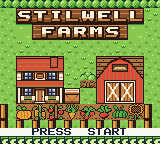
64 plots of woods, lakes, marsh, quarries and a river.
The farm is the middle of the valley. Every plot is for sale, from a rope line and a sign or from the valley map, which shows each plot by what grows on it.
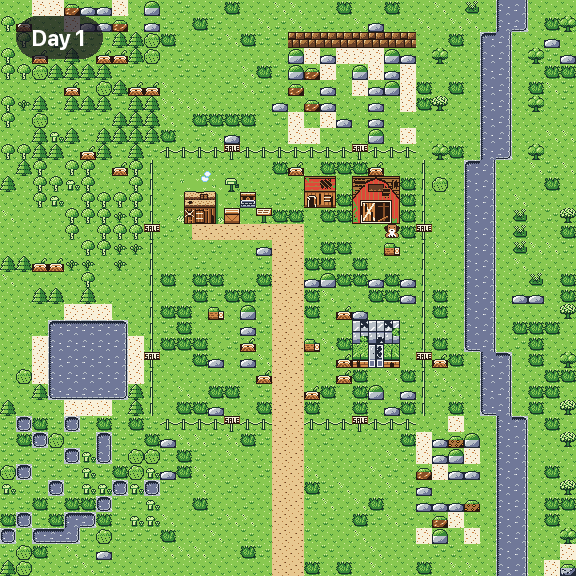
The design tools work like drawing. Hold A and walk to lay a path or a fence line in one stroke; SELECT swaps to the eraser and the build menu has undo. A swatch page recolours every roof, plank and stone on the farm, and a blueprint copies a corner and stamps it down anywhere, previewed as a ghost first.
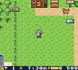
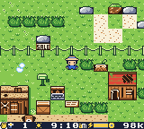
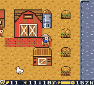
- Farming14 crops · 4 fruit trees · sprinklers
- Animalscows · hens · sheep · breeds and breeding
- Building9 farm buildings · 30+ decorations
Eight businesses, six townsfolk, four festivals.
The road south leads to a town. A boarded-up storefront becomes a Bakery, a Juice Bar, a Creamery or a Florist, stocked with what the farm grows; Market Street adds lots for a Brewery, a Winery, a Restaurant and an Inn. Six townsfolk keep daily routines and 24 heart scenes, every season has a festival minigame, and six restoration projects change the town for good.
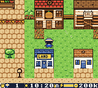
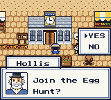
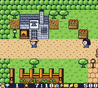
The house, every farm building and every storefront can be rebuilt in one of four styles.
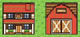
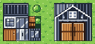
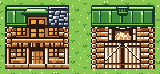
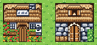
- FarmhandsWaterer · Harvester · Rancher · Groundskeeper
- Cooking16 dishes
- Saves2 slots · battery-backed
512 background tiles at a time.
The Game Boy Color can show 512 background tiles at once. The game keeps all of its art on the cartridge and streams only the tiles on screen into video memory as the view scrolls, counting references to each one. That is how one cartridge holds hundreds of buildings, crops and decorations.
The 64 × 64 world, every cell’s ground, crop and decoration, lives in the cartridge’s battery-backed RAM, so the valley is saved exactly as it was left.
- LanguageC · GBDK-2020
- CartridgeMBC5 · 512 KB ROM · 128 KB save RAM
- Soundcustom 4-channel driver · VBlank-driven
Every tile, map and song is a text file.
Tiles, sprites and maps are text files compiled by tools/gen_art.py into banked C data; a map is a plain-text grid. Songs are written in a small MML dialect and compiled by tools/gen_music.py for the game’s own driver.
The ROM is played by script.
The test suite drives the ROM headless in PyBoy with pathfinding, memory inspection and screenshots, across 69 scripted scenarios. An economy model reads every price, yield and wage from the C sources and simulates three in-game years, and the suite checks the ROM against it.

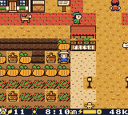
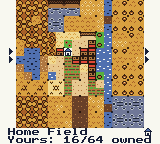
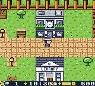
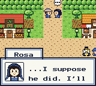
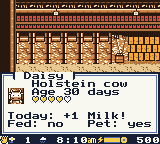
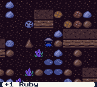
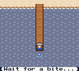
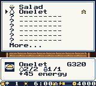
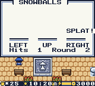
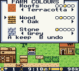
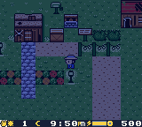
- Tests69 scripted scenarios · PyBoy
- Economy3 in-game years simulated
- Releasesv0.1 to v0.3 · Nov 14–15, 2026
It runs on the hardware.
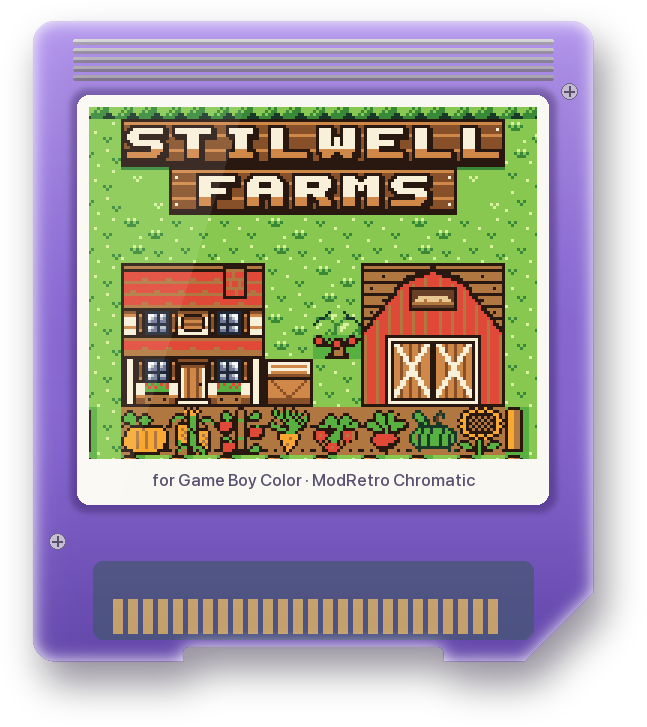
The ROM installs on a ModRetro Chromatic, writes to any MBC5 flash cartridge with RAM and a battery for a Game Boy Color, and opens in any Game Boy Color emulator, such as SameBoy or mGBA.
Stilwell Farms is an independent, original fan project made for the ModRetro Chromatic. It is not affiliated with or endorsed by ModRetro, OpenAI or Nintendo. Game Boy and Game Boy Color are trademarks of Nintendo.